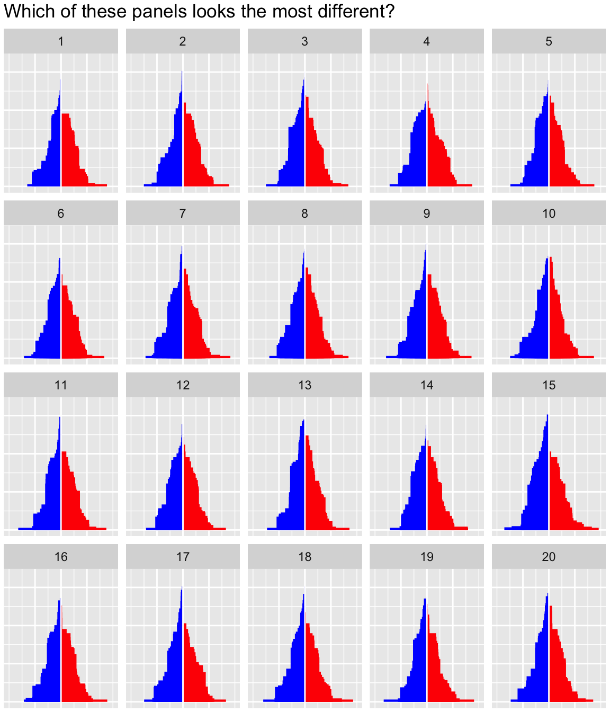

The idea in this example is to take the margins for each state as reported by a pollster and sample for each state from a normal distribution to get a vector of values representing the margins of a potential election day outcome. The polls here are loosely based on the 2012 US Election polls by .
simPoll <- function(trueData) {
simMargin <- rnorm(nrow(trueData), mean=trueData$Margin, sd=2.5)
simDemocrat <- ((simMargin>0) & trueData$Democrat) | ((simMargin<0) & !trueData$Democrat)
simMargin <- abs(simMargin)
res <- trueData
res$Democrat <- simDemocrat
res$Margin <- simMargin
res
}simPoll is a relatively specialized function that takes
polling results for each state and produces a random value from a normal
distribution using the polling results as the mean. For now we assume a
standard deviation (or ‘accuracy’) for each state poll of 2.5.sim1 is a first instance of the simulation - based on this
simulation, we can compute for example the number of Electoral Votes for
the Democratic party based on this simulated election day result.
data(electoral, package="nullabor")
margins <- electoral$polls
sim1 <- simPoll(margins)
sum(sim1$Electoral.Votes[sim1$Democrat])## [1] 283Because the simPoll function returns a data set of
exactly the same form as the original data, we can use this function as
a method in the lineup call to get a set of simulations
together with the polling results. Because we want to keep track of the
position of the real data, we set the position ourselves (but keep it
secret for now by using a random position).
pos <- sample(20,1)
lpdata <- nullabor::lineup(method = simPoll, true=margins, n=20, pos=pos)
dim(lpdata)## [1] 1020 5
summary(lpdata)## State Electoral.Votes Margin Democrat
## Alabama : 20 Min. : 3.00 Min. : 0.01233 Mode :logical
## Alaska : 20 1st Qu.: 4.00 1st Qu.: 6.88453 FALSE:530
## Arizona : 20 Median : 8.00 Median :13.30924 TRUE :490
## Arkansas : 20 Mean :10.55 Mean :15.98859
## California: 20 3rd Qu.:12.00 3rd Qu.:22.24226
## Colorado : 20 Max. :55.00 Max. :90.53758
## (Other) :900
## .sample
## Min. : 1.00
## 1st Qu.: 5.75
## Median :10.50
## Mean :10.50
## 3rd Qu.:15.25
## Max. :20.00
## We need to exchange the polling results for the actual election results.
election <- electoral$election
idx <- which(lpdata$.sample==pos)
lpdata$Margin[idx] <- election$Margin… and now we have to build the actual plot. That requires a bit of restructuring of the data:
library(dplyr)
lpdata <- lpdata %>% arrange(desc(Margin))
lpdata <- lpdata %>% group_by(.sample, Democrat) %>% mutate(
tower=cumsum(Electoral.Votes[order(Margin, decreasing=TRUE)])
)
lpdata$diff <- with(lpdata, Margin*c(1,-1)[as.numeric(Democrat)+1])And now we can plot the rectangles:
library(ggplot2)
dframe <- lpdata
dframe$diff <- with(dframe, diff+sign(diff)*0.075)
dframe$diff <- pmin(50, dframe$diff)
ggplot(aes(x=diff, y=tower, colour = factor(Democrat)), data=dframe) +
scale_colour_manual(values=c("red", "blue"), guide="none") +
scale_fill_manual(values=c("red", "blue"), guide="none") +
scale_x_continuous(breaks=c(-25,0,25), labels=c("25", "0", "25"),
limits=c(-50,50)) +
geom_rect(aes(xmin=pmin(0, diff), xmax=pmax(0,diff), ymin=0,
ymax=tower, fill=Democrat), size=0) +
geom_vline(xintercept=0, colour="white") +
facet_wrap(~.sample) +
theme(axis.text=element_blank(), axis.ticks=element_blank(),
axis.title=element_blank(),
plot.margin=unit(c(0.1,0.1,0,0), "cm")) +
ggtitle("Which of these panels looks the most different?") Try to decide for yourself! Which plot looks the most different in this lineup? Once you have choosen, you can compare it to the number below:
pos## [1] 7